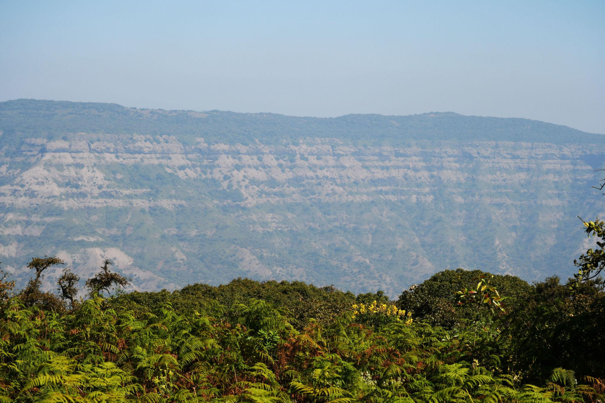
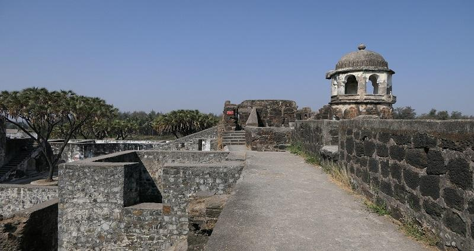
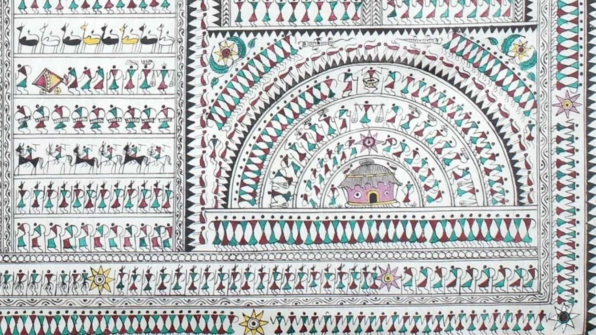
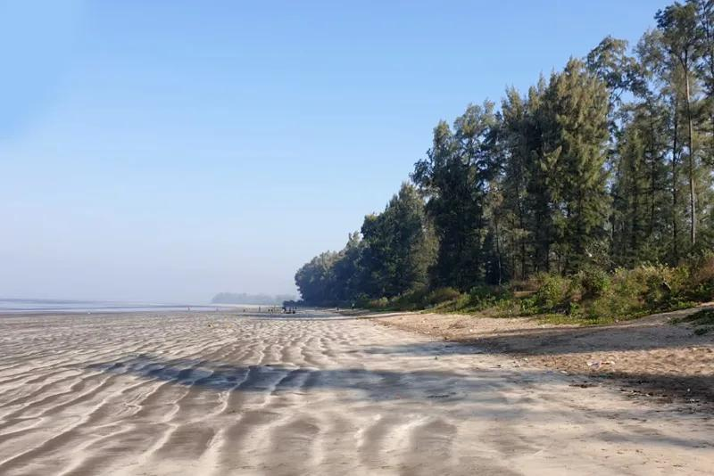
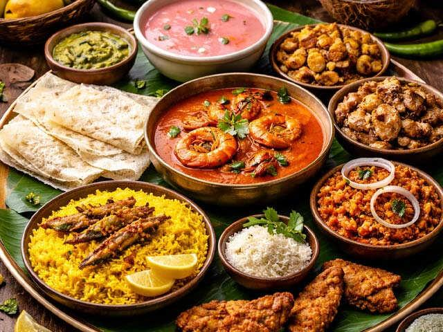
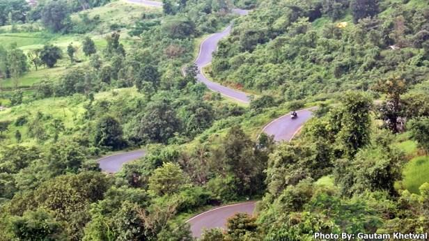
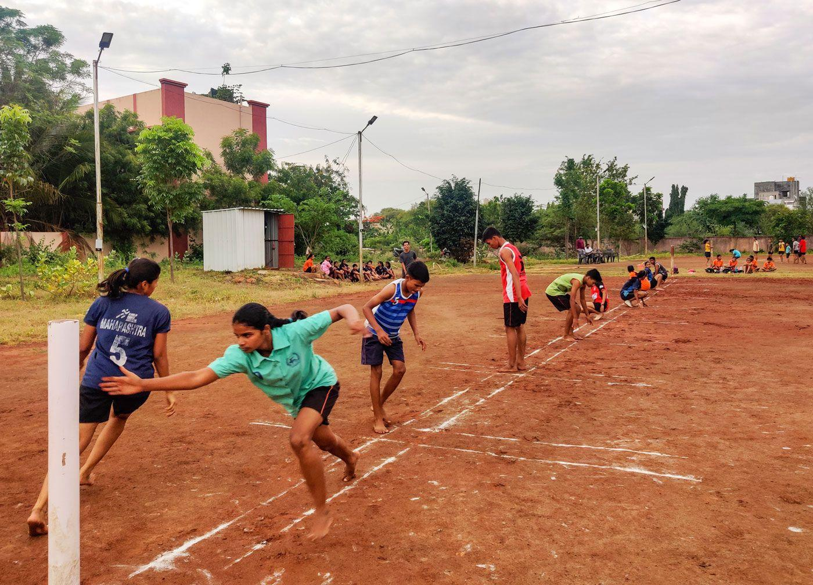

About

Palghar, Maharashtra's 36th district established in 2014, is a vibrant region blending urban industry with lush coastal and mountainous terrain. Located just about 110 kilometers from Mumbai, it serves as a critical economic, cultural, and environmental hub known for its rich tribal heritage, pristine beaches, and diverse agricultural output.Carved out of the former Thane district, Palghar stretches along the Arabian Sea coast and encompasses the Sahyadri mountain ranges. It is divided into diverse geographical belts: the coastal bandarpatti (known for fishing and plains), the central plains, and the mountainous jangalapatti
- Location: Palghar is located entirely on the mainland of Maharashtra and does not extend onto Salsette Island. The district is situated roughly 240 to 260 kilometers northwest of Pune city. It is beautifully bordered by the Arabian Sea to the west, the Vaitarna River, and the scenic hills of the Sahyadri range.
- Famous as: Palghar is widely famous for its pristine, uncrowded beaches and the beautiful hill station of Jawhar. It holds a major place in cultural history as the global birthplace and home of the famous tribal Warli art. The region is also famous for its vast fruit orchards, lush green forests, and unique tribal festivals rather than modern mega-townships.
History

The region features a deep historical legacy, having been ruled by the Mauryas, Satavahanas, Mughals, Marathas, and Portuguese. Key historical landmarks include the grand Kelva Fort, Vasai Fort, and Shirpamal—the site where Chhatrapati Shivaji Maharaj was once felicitated. It also played a heroic role in the Quit India Movement of 1942.
- Palghar holds a deep historical legacy that evolved from the ancient maritime trade hub of Nalasopara into a prized stronghold for both Portuguese rulers and Maratha warriors. The region later played a heroic role in India's freedom struggle through the sacrifices of its local martyrs, eventually becoming Maharashtra's 36th independent district on August 1, 2014.
Culture

Palghar is deeply rooted in indigenous and tribal traditions, with a significant population of Warli, Katkari, and Malhar Koli communities. The area is globally celebrated for its Warli paintings, traditional taarpa dancing, and the vibrant Bohada mask rituals.
- Main Festivals: Ganesh Utsav and Navratri are celebrated with great joy across the district, but Palghar's most unique celebrations are tribal festivals like the Bohada Mask Festival and the Chikoo Festival. The region does not host the Upvan Arts Festival, as Upvan Lake is located in Thane; instead, Palghar locals gather for the vibrant Raan Bhaji Mahotsav to celebrate wild forest foods.
- Traditional Arts: Palghar is not the home of the Gadkari Rangayatan theatre hub, which is located in Thane. Instead, Palghar is globally famous as the true birthplace of Warli painting, where tribal artists use geometric shapes to paint daily life on mud walls, alongside traditional Tarpa dances and coastal Koli folk music.
- Language: Marathi is the official language and the heart of communication across the entire district. Because of its large indigenous population and coastal roots, locals speak unique regional dialects like Varli and Vadvali, rather than the urban blends spoken in Mumbai's closer suburbs.
Tourism

The district boasts beautiful, uncrowded beaches like Bordi and Suruchi, along with cascading waterfalls and hills, particularly in Jawhar, which is known as the "Mahabaleshwar of Palghar District".
- Kelva Beach and Shirgaon Beach: Palghar does not have Upvan Lake but features a vast coastline. Beautiful beaches like Kelva and Shirgaon offer peaceful paths and sunset views.
- Jawhar HillsInstead of Yeoor Hills: Palghar boasts the magnificent hill station of Jawhar. This paradise offers cascading waterfalls, deep valleys, and trekking trails.
- Mahalakshmi Temple and Ram Kund: The Ambarnath Temple is in Thane, but Palghar holds its own sacred sites. The historic Mahalakshmi Temple in Dahanu draws thousands of visitors.
Famous Food

The local diet relies heavily on fresh seafood and traditional forest vegetables, with festivals like the Raan Bhaji Mahotsav celebrating wild forest greens. The region is also famous for its orchards, particularly Dahanu's renowned Chikoo fruit.
- Famous dishes: Palghar is not famous for urban Misal Pav, but rather for its rustic, tribal forest foods. Locals love authentic Pithla Bhakri made from fresh millet and unique seasonal wild greens cooked during the annual Raan Bhaji Mahotsav.
- Local Specialty: While Thane is famous for Mamledar Misal, Palghar's true culinary crown jewel is its coastal Koli seafood made with fresh Arabian Sea catch and spicy Konkani masalas. The region is also globally famous for its sweet, juicy Dahanu Chikoos and sweet Chikoo chips.
Economy

Palghar's economy is uniquely diverse. It features thriving fisheries (with Satapati being the largest fishing port in the state), dense agricultural and horticultural production, and major industrial powerhouses like the Tarapur MIDC. It is also home to India’s first atomic power plant.
- Key Industries: Palghar is not a massive center for Information Technology (IT) or corporate back-offices. Instead, its economic backbone relies on heavy manufacturing and engineering at the massive Tarapur MIDC industrial zone, which is one of the largest industrial estates in the state and home to India's first atomic power station.
- Main Crops: You are exactly right about the agriculture! Rice is the absolute main crop grown across the rural parts of the district during the monsoon season. The region is also globally famous for its sweet, juicy Gholvad Chikoos, which hold a prestigious Geographical Indication (GI) tag.
Environment

Blessed with over 112 kilometers of coastline and dense forest cover, Palghar is ecologically rich. The area receives heavy rainfall and is home to rich biodiversity across its rift valleys and mountainous enclaves.
- Climate: The district experiences a tropical climate that is hot and highly humid along the coast, with temperatures becoming cooler in the elevated inland regions. It receives exceptionally heavy rainfall from June to September, turning the entire Sahyadri mountain landscape vibrant green.
- Key Rivers: Palghar does not rely on the Ulhas River or the Bhatsa Dam. Instead, the Vaitarna River and the Surya River serve as the primary lifelines of the district, with the massive Dhamni Dam and Surya Dam supplying vital water to the local region
- Protected Areas: Palghar does not house the Yeoor Hills or the Thane Creek Flamingo Sanctuary. Instead, the district is protected by the dense, expansive forest reserves of Jawhar and Dahanu, which are designated eco-sensitive zones that shelter rich tribal habitats, diverse wildlife, and ancestral flora.
Sports

The district places a growing emphasis on local and traditional sports, often tied to village festivals and cultural events, fostering youth engagement in indigenous rural games and coastal activities.
- Traditional Sports: Palghar does not host major urban wrestling Akhadas or use Thane's Dadoji Kondadev Stadium. Instead, the local youth heavily engage in coastal and rural sports, including intensely competitive regional Kabaddi tournaments and rural Kho-Kho matches. Coastal village festivals also feature local boat racing and beach-side athletics.
- Focus: The absolute main focus across Palghar is cricket, which has a massive grassroots following. The district acts as a phenomenal talent pipeline for Indian cricket through the Palghar Dahanu Taluka Sports Association (PDTSA) in Boisar. Palghar has famously produced top-tier international and national cricketers, including India fast bowler Shardul Thakur, former Mumbai Indians wicket-keeper Aditya Tare, and India Under-19 captain Ayush Mhatre.